Daten importieren
Import-Data
- 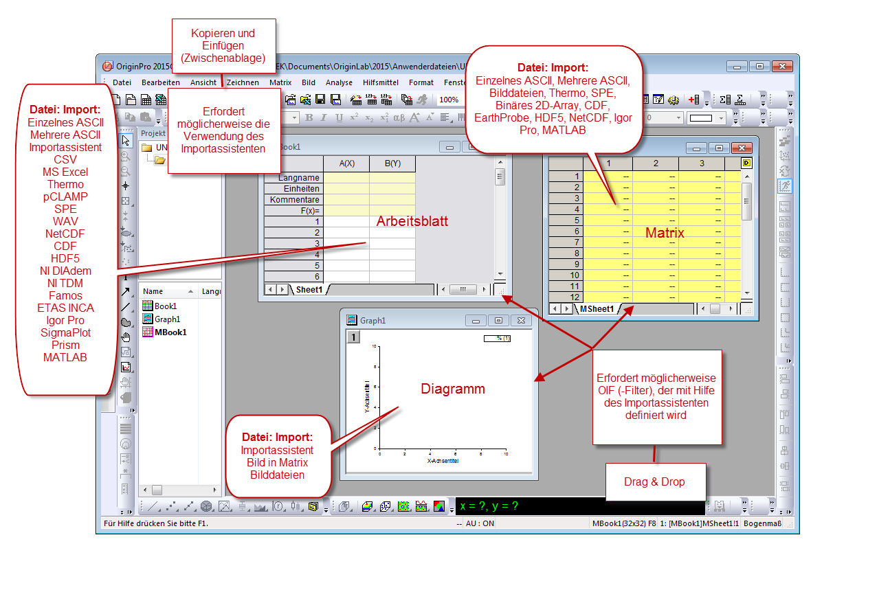
In Origin 2019b wurde ein neuer Mechanismus für den Datenimport eingeführt, den wir als Datenkonnektoren bezeichnen. Wie der Name andeutet, erstellen Datenkonnektoren eine Verbindung zwischen Ihrem Projekt und einer externen Quelldatei. Die Quelldatei kann lokal sein, sie kann sich auf dem Unternehmensnetzwerk befinden; sie kann sogar auf einem Webserver sein. Beim Speichern des Projekts unterstützen Datenkonnektoren Optionen zum Ausschließen von importierten Daten (kleinere Dateien unterhalten außerdem einen Live-Verbindung zu den Quelldaten). Dies dient auch dem Schutz der Daten gegen versehentliches Ändern und Löschen. Datenkonnektoren unterstützen den Import der zuvor nicht verfügbaren Datenquellen, einschließlich n HTML-Tabellen und JavaScript Object Notation (JSON). Datenkonnektoren unterstützen Drag&Drop und Automatisch Importieren beim Öffnen des Projekts. Zusätzlich fährt OriginLab damit fort, die Unterstützung für Konnektoren auf neue Datenformate zu erweitern. In Origin 2021b wurden zum Beispiel die Konnektoren für Dateien des Formats National Instruments TDMS und NetCDF verbessert; außerdem wurde ein neuer Konnektor für Dateien des Formats Thermo Fisher Scientific MSRawFile hinzugefügt.
Weitere unterstützte Importmechanismen:
- OriginLab unterstützt weiterhin Origins langjährige Kombination von X-Funktion + filterbasierte Routinen für ASCII-, CSV-, Excel-, Binärdateien und vielen Drittanbieterformaten, einschließlich MATLAB, pClamp, NI TDM und NetCDF. Wenn Sie ein Langzeitanwender sind und Importfilter und -designs besitzen, mit denen Sie schon lange arbeiten, sollten diese wie immer funktionieren.
- Kopieren-Einfügen Eignet sich für einen schnellen Import von einfach strukturierten Daten (am nützlichsten zum Einfügen von Daten in Arbeitsblätter).
- Für komplexe ASCII-, binäre oder benutzerdefinierte Dateitypen können Sie die grafische Bedienoberfläche des Importassistenten verwenden, um Ihre Datei zu analysieren und die Einstellungen in einer Importfilterdatei zu speichern. Der Importassistent unterstützt Funktionen wie das Speichern von Dateimetadaten in Variablen und das Verwenden von benutzerdefinierten Origin-C-Funktionen für die Datenverarbeitung und den Import.
- Falls Sie mit SQL-Datenbanken arbeiten, können Sie Origins Datenbankkonnektor und die Bedienoberfläche des SQL-Editors verwenden, um Verbindungszeichenketten und SQL-Abfragen zu erstellen.
Hinweise für Anwender von Upgrades
Langjährige Origin-Anwender, die ein Upgrade von einer der älteren Versionen durchführen, sollten beachten, dass die Importfunktionen kürzlich vom Menü Datei zu dem neuen Menü Daten verschoben wurden. Hier finden Sie auch Origins neueste Hilfsmittel für den Datenimport: Datenkonnektoren.
- 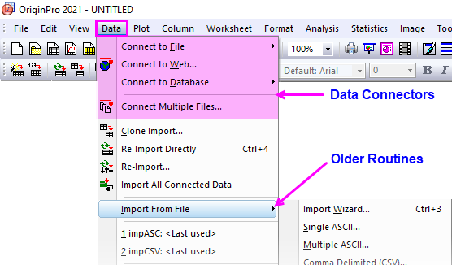
Datenkonnektoren
- 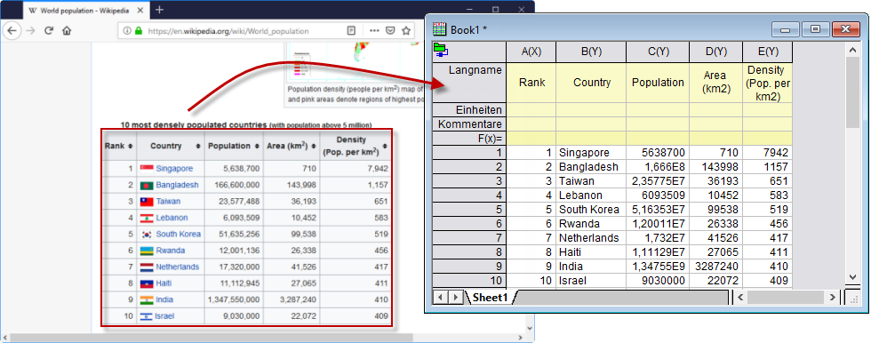
Datenkonnektoren stellen einen allgemeinen Mechanismus zum Importieren von Daten aus lokalen oder webbasierten Dateien und Seiten in Ihre Origin-Projekte dar. Datenkonnektoren unterscheiden sich von älteren Origin-Importmethoden hauptsächlich durch zwei (modifizierbare) Standardverhalten:
- Daten, die über Datenkonnektoren importiert werden, sind für die Bearbeitung gesperrt. Dies unterstützt bei der Sicherstellung der Datenintegrität.
- Daten, die über Konnektor importiert wurden, werden nicht mit dem Projekt gespeichert. Dadurch bleiben Ihre Projektdateien kleiner.
Datenkonnektoren unterstützen eine Reihe von gängigen Datenformaten, einschließlich:
- Text/CSV
- Excel
- Origin-Datei (Projekt, Arbeitsmappe, Matrix)
- MATLAB
- JavaScript Object Notation (JSON)
- HDF
- TDMS
- HTML-Tabelle
- Importfilter (Verwendung eines benutzerdefinierten Importfilters mit Datenkonnektor)
- Shapefile
- NetCDF
- XML
 | Um eine Verbindung zur SQL-Datenbank herzustellen, siehe Datenbank. |
Um Daten mit einem Datenkonnektor zu importieren:
- Klicken Sie bei aktiver Arbeitsmappe auf das Menü Daten.
- Wenn Sie eine Verbindung zu einer lokalen Datei oder einer Datei im Netzwerk herstellen möchten, wählen Sie Mit Datei verbinden und wählen Sie einen Dateityp.
- Um eine Verbindung zu mehreren Dateien herzustellen, klicken Sie auf Mit mehreren Dateien verbinden.
- Wenn Sie eine Verbindung zu Webdaten herstellen möchten, klicken Sie auf Mit Web verbinden und geben Sie eine URL ein.
Informationen zu den Datenkonnektoren
- Per Standard, wenn die Dateigröße der Importdaten 500kB überschreitet, werden die importierten Daten und die Diagramme, die aus diesen Daten erstellt werden, NICHT mit der Origin-Datei gespeichert (siehe LabTalk-Systemvariable @FSE). Alle Analyseausgaben, die sich aus den importierten Daten ergeben, WERDEN mit der Origin-Datei gespeichert. Bei der Arbeit mit großen Projekten kann das Nichtspeichern der Rohdaten mit Ihrer Projektdatei kann in beträchtlichem Maße die Dateigröße reduzieren und die Leistung verbessern.
- WICHTIG: Da über Konnektor importierte Daten (> 500 kB) standardmäßig NICHT mit der Projektdatei gespeichert werden, sollten Anwender sich immer fragen, ob sie die importierten Daten aufheben müssen. Dies ist insbesondere wahr, wenn die Datenquelle webbasiert und an einer Stelle jenseits Ihrer Kontrolle gespeichert ist. Sollten Sie es vorziehen, alle Daten, die über einen Datenkonnektor importiert wurden, mit Ihrer Origin-Datei zu speichern, klicken Sie auf das Symbol des Datenkonnektors und entfernen Sie das Häkchen neben Importierte Daten beim Speichern ausschließen, bevor Sie Ihre Datei speichern†. Beachten Sie, dass jede Mappe, die einen Datenkonnektor enthält, ihr eigenes Häkchen zum Ausschließen... hat. Falls Sie sich alternativ entscheiden, dass Sie keine Datenkonnektoren brauchen, können Sie auf das Symbol Datenkonnektor klicken und Datenkonnektor entfernen (aus dieser Mappe) oder Datenkonnektoren aus allen Mappen entfernen (im Projekt) wählen.
- Daten können jederzeit neu importiert werden, indem Sie auf das Symbol des Datenkonnektors (
 oder
oder  ) in der oberen linken Ecke der Arbeitsmappe klicken und Importieren (Strg+4) oder Alle importieren wählen.
) in der oberen linken Ecke der Arbeitsmappe klicken und Importieren (Strg+4) oder Alle importieren wählen.
- Daten, die über Datenkonnektoren importiert werden, sind für die Bearbeitung standardmäßig gesperrt. Sie können sie grafisch darstellen und sie analysieren, aber Sie können sie nicht modifizieren. Dies ist eine Absicherung gegen versehentliche Ändern der Daten, die aber einige Anwender als zu einschränkend empfinden. Entsperren Sie Daten, indem Sie auf das Konnektorsymbol klicken und die Option Importierte Daten entsperren wählen. Lesen Sie in dieser FAQ Informationen zum Entfernen von Bearbeitungseinschränkungen für Daten, die mit einem Konnektor importiert wurden.
- Eine Arbeitsmappe kann nur einen Konnektortyp haben (z. B. Text/CSV). Für Dateien mit einer einfachen Struktur wie Text/CSV können Sie mehrere Blätter mit mehreren separaten Dateien verbinden, solange sie denselben Konnektor teilen. Für Dateien mit komplexeren Strukturen wie Excel oder MATLAB stellen Sie anfangs eine Verbindung zu einem Blatt/einer Variable her. Dann verwenden Sie den Befehl Blatt/Blätter hinzufügen und verbinden im Kontextmenü vom Datennavigator, um weitere Blätter /Variablen in der Mappe hinzuzufügen. Sie können nur eine einzelne Excel- oder MATLAB-Datei mit einer einzelnen Origin-Arbeitsmappe oder Matrixmappe verbinden.
- In Mappen, die Dateien mit einer einfachen Struktur enthalten (z. B. CSV) wird das Blatt mit einem leeren Konnektor hinzugefügt, wenn Sie mit der rechten Maustaste auf einen Blattreiter klicken und ein neues Blatt hinzufügen. Der nicht verbundene Zustand wird durch ein hellgelbes Symbol für den Konnektor
 gekennzeichnet (siehe Konnektorzustände unten). Klicken Sie auf ein Konnektorsymbol, um ein Kontextmenü zu öffnen, in dem Sie das Blatt mit einer Datenquelle verbinden können.
gekennzeichnet (siehe Konnektorzustände unten). Klicken Sie auf ein Konnektorsymbol, um ein Kontextmenü zu öffnen, in dem Sie das Blatt mit einer Datenquelle verbinden können.
- 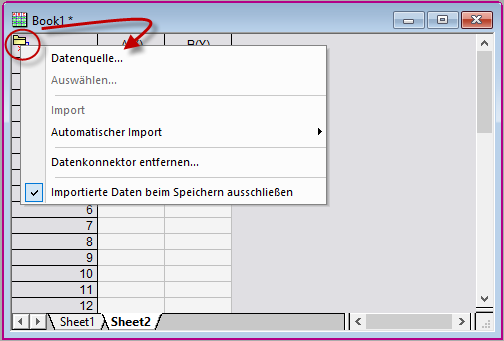
- Datenkonnektoren, die Sie nicht verwenden, können verborgen werden, indem Sie Daten: Mit Datei verbinden: Benutzerdefiniert anpassen ... wählen und das Kontrollkästchen neben den nicht verwendeten Konnektoren deaktivieren.
- Datenkonnektoren für Dateiformate, die nicht mit Origin ausgeliefert werden, sind über Daten: Mit Datei verbinden: Neu hinzufügen ... verfügbar. Neue Datenkonnektoren werden zum Menü Daten hinzugefügt.
- 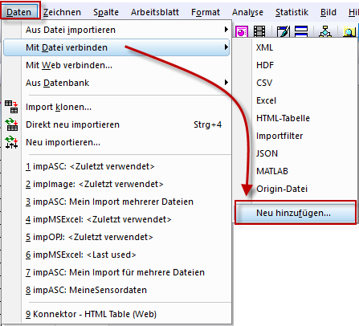
 | †Origin speichert Daten, die über Daten: Mit Web verbinden importiert wurden, für einen Zeitraum im Zwischenspeicher. Dieser Zeitraum wird von der LabTalk-Systemvariable @CFDT plus der Dateigröße bestimmt. Per Standard verwendet eine Datei von 10 MB zwischengespeicherte Daten für ~24 h. Mit anderen Worten, wenn Sie innerhalb von 24 Stunden einen erneuten Import durchführen (d. h. eine neue Verbindung zur Webdatei herstellen), verwenden Sie Daten, die sich vom ersten Import noch im Zwischenspeicher befinden. Wenn Sie einen erneuten Import dieser 10-MB-Datei nach Ablauf von 24 Stunden durchführen, wurde der Zwischenspeicher gelöscht und die Daten werden frisch importiert. Um zu erfahren, wie Sie dieses Zwischenspeicherverhalten steuern, lesen Sie diese Themen:
|
Dateipfad der Datenquelle
Ein Datenkonnektorsymbol wird in fünf Zuständen angezeigt:
- Wenn die Datenquelle verbunden ist, sieht das Symbol folgendermaßen aus:
- Wenn die Daten im Blatt für die Bearbeitung gesperrt sind (entweder über das Menü Konnektor oder @IPDC=0), sieht das Symbol folgendermaßen aus:

- Wenn der Import von einer Datenquelle ausstehend ist, sieht das Symbol folgendermaßen aus:
- Wenn ein neues Blatt zu einer verbundenen Mappe hinzugefügt wurde, wird ein leerer Datenkonnektor zum Blatt hinzugefügt und das Symbol sieht folgendermaßen aus:
- Wenn die Datenquelle nicht mehr zur Verfügung steht (die Datenquelle wurde z. B. verschoben), sieht das Symbol folgendermaßen aus:

- Wenn das Blatt vor Bearbeitungen aller Art geschützt ist (Arbeitsblattschutz), ist das Konnektormenü deaktiviert und die Symbole sehen folgendermaßen aus:
Unabhängig vom Verbindungsstatus können Sie auf das Konnektorsymbol klicken. Verwenden Sie dann den Dateipfad der Datenquelle und den Allgemeinen Datenpfad, damit die Verbindung zwischen Ihren Origin-Dateien und Quelldaten erhalten bleibt.
- 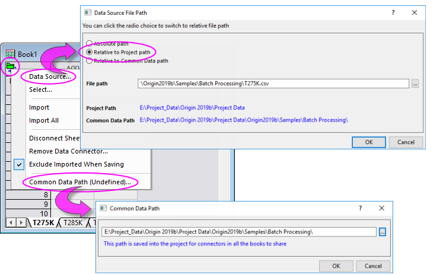
- Relativ zum Projektpfad: Wenn Ihre Daten in Ordnern unter der Projektdatei gespeichert werden, könnten Sie den Dateipfad der Datenquelle auf Relativ zum Projektpfad setzen. Sie können das Projekt und die Datenquellen zusammen verschieben. Ihre relativen Pfade werden bewahrt. Es sind keine Pfadkorrekturen erforderlich, wenn Sie die Projektdatei von einer anderen Stelle in Ihrem Netzwerk erneut öffnen.
- Relativ zum allgemeinen Datenpfad: Wenn die Datenquellen sich unter einem allgemeinen Pfad befinden, könnten Sie den Dateipfad der Datenquelle auf Relativ zum allgemeinen Datenpfad setzen. Wenn die Dateien in der Folge verschoben werden, können Sie den Allgemeinen Datenpfad und dann Alle Mappe importieren erneut einrichten.
Datennavigator
Der Datennavigator ist ein minimierbares Bedienfeld, das automatisch zur Arbeitsmappe hinzugefügt wird, wenn Sie eine Verbindung zu Dateien mit mehreren Seiten/Variablen wie Excel, MATLAB oder Origin-Projekte herstellen.
- 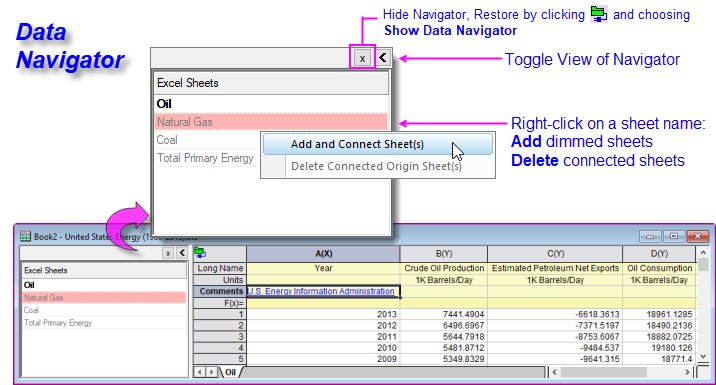
- Origin importiert die Daten aus dem ersten Blatt und listet weitere Blätter in abgeblendeter Weise auf.
- Klicken Sie mit der rechten Maustaste auf ein abgeblendetes Blatt -- oder drücken Sie STRG oder SHIFT und wählen Sie mehrere Blätter -- und wählen Sie Blätter hinzufügen und verbinden.
- Der Dateiname wird dem Langnamen der Mappe zugewiesen und der ursprüngliche Blattname wird dem Namen des Blatts zugewiesen.
- Verbundene Blätter können aus der aktuellen Origin-Arbeitsmappe gelöscht werden.
Datenkonnektoren und Drag&Drop
Für die Dateitypen, die unter Daten: Mit Datei verbinden aufgeführt sind, wird Drag&Drop unterstützt.
- Bei Dateien mit einer einfachen Headerinformation (z. B. nur Spaltenname und Einheiten), wird ein Datenkonnektor hinzugefügt und die Datei wird ohne einen Importfilter ordentlich geparst.
- Bei Dateien, die nicht ordentlich geparst werden (d. h. die Headerinformation endet im Datenteil des Arbeitsblatt), erwägen Sie, einen Origin-Importfilter (*.oif) mit Hilfe des Importassistenten zu erstellen.
- Importfilter können im Datendateiordner, im Ordner Anwenderdateien\Filters oder im aktuellen Fenster gespeichert werden. Wenn Sie beabsichtigen, eine Vorlage für Ihren Datenimport zu verwenden, können Sie den Filter im Fenster speichern. Ansonsten sollte die Filterdatei (*.oif) entweder im Datendateiordner oder im Ordner \Anwenderdateien\Filters abgelegt werden.
Mit Text/CSV verbinden
CSV-Dateien
Sie können einen Datenkonnektor verwenden, um lokale oder im Web gespeicherte Textdateien (TXT, DAT, CSV) zu importieren. Die Datenkonnektormethoden funktionieren gut für diese Dateitypen. Sie vereinfachen und in manchen Fälle beheben eininge der Probleme, die mit Origins älteren auf X-Funktionen basierenden Importroutinen im Zusammenhang stehen. Der Import von Datums-/Zeitdaten erfordert zum Beispiel immer die manuelle Konfiguration von Datums-/Zeitdaten. Wenn Sie Datenkonnektoren verwenden, wird diese Konfiguration automatisch für Sie übernommen, wenn Ihre Datums-/Zeitdaten einem leicht erkennbaren Standardformat entsprechen.
Um eine Verbindung zu einer Datei auf einem lokalen oder LAN-Netzwerk herzustellen:
- Wählen Sie bei aktiver Arbeitsmappe Daten: Mit Datei verbinden: Text/CSV.
- Suchen Sie nach Ihrer Datei und wählen Sie sie aus.
- Legen Sie Ihre CSV-Importoptionen fest. In vielen Fällen können Sie einfach die Standardwerte übernehmen und Ihre Datei wird sauber importiert. Versuchen Sie testweise, Daten ohne Ändern der Standardwerte zu importieren. Wenn die Ergebnisse nicht befriedigend sind, führen Sie den Import erneut aus und ändern Sie die Standardeinstellungen. Klicken Sie auf die Schaltfläche Weitere Optionen (links von OK) für weitere Optionen.
 |
In diesem Kurztutorial verwenden wir den Text/CSV-Konnektor, um eine Textdatei mit einer Datums-/Zeitkomponente zu importieren. Während ältere Origin-Importmethoden die Datums-/Zeitdaten als Text behandelten und Anwender die Datums-/Zeitspalte nach dem Import manuell auf Datum setzen mussten, kann der Text/CSV-Konnektor die Arbeitsblattspalte automatisch beim Import konfigurieren.
- Klicken Sie auf die Schaltfläche Neue Arbeitsmappe
 und wählen Sie Daten: Mit Datei verbinden: Text/CSV. und wählen Sie Daten: Mit Datei verbinden: Text/CSV.
- Navigieren Sie zu <Origin-Programmordner>\Samples\Import and Export\ und öffnen Sie die Datei Date with higher precision.dat.
- Übernehmen Sie alle Standardeinstellungen im Dialog CSV-Importoptionen und klicken Sie auf OK. Die Daten werden in die Arbeitsmappe importiert.
- Klicken Sie auf die SpaltenüberschriftA, um die Spalte zu markieren, klicken Sie mit der rechten Maustaste und wählen Sie Einstellungen. Beachten Sie, dass Format automatisch auf Datum und Anzeige auf Benutzerdefinierte Anzeige gesetzt wurde und dass ein benutzerdefiniertes Format in Benutzerdefinierte Anzeige gezeigt wird.
- 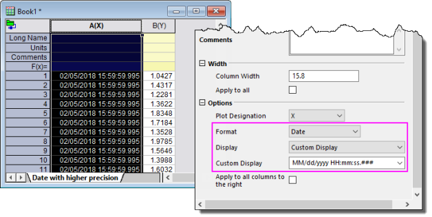
|
|
In diesem Kurztutorial verwenden wir einen Datenkonnektor, um mehrere Dateien zu importieren. Diese Dateien mit identischen Strukturen haben mehrere Zeilen mit Metadaten, die wir bewahren möchten. Sie verwenden daher eine Importfilterdatei, die mit dem Importassistenten entwickelt wurde, um die Dateien zu importieren und die Metadaten für mehrere Spaltenbeschriftungszeilen in jedem Arbeitsblatt zu schreiben. Sie werden sehen, (a) wie mehrere Dateien mit Hilfe eines Datenkonnektors importiert werden und (b) wie Sie eine Importfilterdatei (*.oif) verwenden, die mit einer älteren Version von Origin entwickelt wurde, um Dateien mit Hilfe von Origins neuer Technologie der Datenkonnektoren zu importieren.
- Öffnen Sie ein neues Projekt und wählen Sie bei aktiver Arbeitsmappe Daten: Mehrere Dateien verbinden.
- Legen Sie im Dialog files2dc Folgendes fest:
- Datenkonnektor = Importfilter
- Quelle = Festgelegte Dateien
- Dateinamen = <Origin-Programmordner>\Samples\Import and Export\S15-125-03.dat, S21-235-07.dat und S32-014-04.dat
- Gleiche Mappe = aktiviert (Aktivieren des Kontrollkästchens holt alle Dateien in eine Mappe.)
- Klicken Sie auf OK und setzen Sie im aufgerufenen Dialog den Importfilter = Datenordner: VarsFromFileNameAndHeader.oif
- Klicken Sie auf OK. Die drei Dateien werden als separate Blätter in die Arbeitsmappe importiert.
|
Um eine Verbindung zu einer Datei im Web herzustellen:
- Wählen Sie Daten: Mit Web verbinden.
- Wenn Sie eine Datei-URL haben, geben Sie sie in das Feld URL ein. Andernfalls setzen Sie Dateityp auf Text/CSV (optional, aber es hilft die Zuletzt verwendeten URLs zu filtern). Klicken Sie dann direkt auf Zuletzt verwendete URLs und wählen Sie auf der Liste.
- 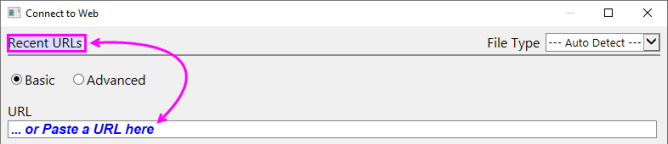
| Sie können den Dialog CSV-Importoptionen verwenden, um einen teilweisen Import der im Web gespeicherten Dateien festzulegen, genauso wie Sie das für lokal gespeicherte Dateien können. Aktivieren Sie das Kontrollkästchen Teilweiser Import für eine Anleitung zur Syntax, die zum Definieren der zu importierenden Spalte und Zeile verwendet wird. |
| Hinweis: Weitere Informationen zum Arbeiten mit Text/CSV-Daten finden Sie in der Origin-Hilfe: Hilfe: Origin: Origin-Hilfe > Text/CSV-Konnektor
|
Mit MATLAB-Dateien verbinden
Origin unterstützt weiterhin den älteren auf X-Funktionen basierenden MAT-Dateiimport. Die Datenkonnektoren bieten jedoch einige deutliche Vorteile beim Import von lokal und im Web gespeicherten MATLAB-Dateien:
- Durch das Verbinden mit einer MATLAB-Datei auf Root-Ebene werden alle Variablen als Origin-Matrixobjekte in das Matrixblatt eingefügt.
- Ein Schieber wird hinzugefügt, so dass Sie die Origin-Matrixobjekte im Blatt "durchblättern" können. Sie können zwischen Schieber und Miniaturbildern mit Hilfe der Minisymbolleistenschaltfläche Schieber oder Miniaturbilder wechseln.
- Der Konnektor fügt auch einen minimierbaren Datennavigator zum Fenster hinzu. Wenn Sie Variablen als einzelne Blätter hinzufügen möchten, können Sie mit der rechten Maustaste auf die Liste des Datennavigators klicken und sie hinzufügen.
- 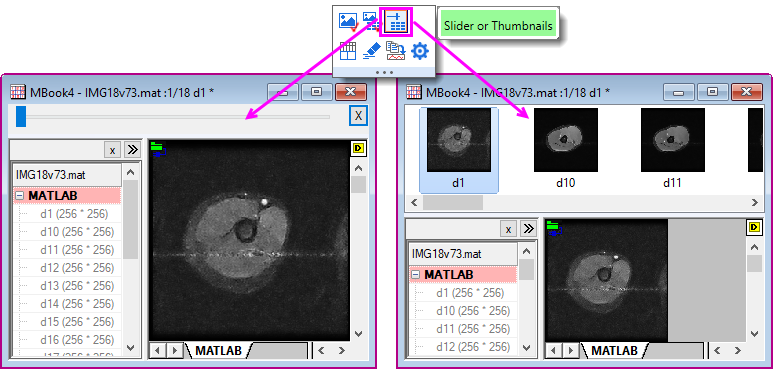
Um eine Verbindung zu einer MATLAB-Datei herzustellen:
- Klicken Sie bei einer aktiven Arbeits- oder Matrixmappe auf Daten: Mit Datei verbinden: MATLAB oder Daten: Mit Web verbinden und geben Sie eine URL in Ihre .mat-Datei ein.
- Wählen Sie die Variablen aus, die Sie importieren möchten (fügen Sie sie in das untere Bedienfeld des Browsers ein) und klicken Sie auf OK.
| Hinweis: Weitere Informationen zum Arbeiten mit dem JSON/MATLAB-Konnektor finden Sie in der Origin-Hilfe: Hilfe: Origin: Origin-Hilfe> JSON/MATLAB
|
Mit NetCDF und Shapefiles verbinden
Das NetCDF-Dateiformat wird zum Teilen von multidimensionalen wissenschaftlichen Daten verwendet. Das Format ist im Bereich der Klimawissenschaft weit verbreitet. Shapefiles werden häufig dazu verwendet, geografische Grenzen und weitere geo-räumliche Daten zu speichern.

Um eine Verbindung zu einer NetCDF-Datei herzustellen:
- Klicken Sie bei einer aktiven Arbeits- oder Matrixmappe auf Daten: Mit Datei verbinden: NetCDF oder Daten: Mit Web verbinden und geben Sie eine URL in Ihre .nc-Datei ein.
- Wählen Sie die Variablen aus, die Sie importieren möchten, indem Sie sie in das untere Bedienfeld des Browsers einfügen.
- Passen Sie Importoptionen (Schaltfläche "Stift") nach Bedarf an und klicken Sie zweimal auf OK.
- Wenn eine Arbeitsmappe aktiv ist, aber die Variable eine Matrixmappe erfordert, werden Sie aufgefordert, eine neue Matrixmappe oder eine eingebettete Matrixmappe in die aktive Arbeitsmappe einzufügen.
Um eine Verbindung zu einer Shapefile herzustellen:
- Wählen Sie bei aktiver Arbeits- oder Matrixmappe auf Daten: Mit Datei verbinden: Shapefile und navigieren Sie zu und wählen Sie Ihre .shp-Datei.
- Legen Sie fest, ob die Attribute geladen und (optional) kodiert und/oder In WGS84 konvertiert werden soll(en), und klicken Sie auf OK.
| Hinweis: Weitere Informationen zum Arbeiten mit dem NetCDF-Konnektor finden Sie in der Origin-Hilfe: Hilfe: Origin: Origin-Hilfe > NetCDF-Konnektor
|
Mit einer Cloud verbinden
Sie können eine Verbindung zu Origin-, MS-Excel- und ASCII-Dateien, die auf MS OneDrive oder Google Drive gespeichert sind, herstellen. Wenn Sie Ihre Kontozugangsdaten eingerichtet haben, ist das Verbinden mit Cloud-Dateien ähnlich dem Verbinden mit lokalen Dateien:
- Klicken Sie bei aktiver Arbeitsmappe auf Daten: Mit Cloud verbinden. Dies öffnet den Browser zum Auswählen von Dateien.
- Verwenden Sie die Bedienelemente der Auswahlliste des Browsers, um die Cloud-Services oder -Konten ggf. zu wechseln.
- 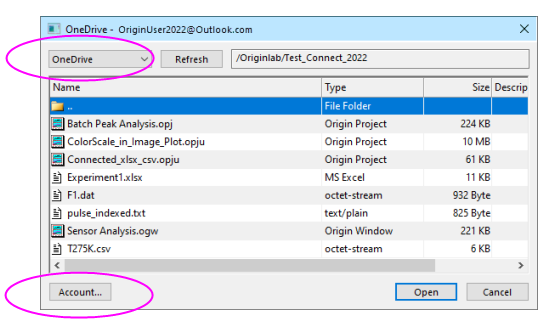
- Wählen Sie eine Datei und klicken auf Öffnen.
Beachten Sie, dass Sie beim ersten Verbinden mit einem Cloud-Konto gebeten werden, dieses Konto zu verifizieren. OriginLabs Zugriff und Übertragung von Daten zwischen Ihrem Cloud-Konto und lokalen Computer findet nur mit Hilfe einer temporären Datei statt. Es wird keine weitere Kommunikation von Informationen durchgeführt.
Mit Excel-Daten arbeiten
Excel Zum Arbeiten mit Excel-Daten in Origin haben Sie mehrere Optionen:
- Sie können Ihre Excel-Daten in die Zwischenablage kopieren und diese Daten in Origin einfügen bzw. die Inhalte einfügen.
- Sie können einen Datenkonnektor verwenden, um eine lokale Excel-Datei zu importieren, indem Sie (1) Daten: Mit Datei verbinden: Excel wählen, (2) auf die Schaltfläche
 auf der Symbolleiste Standard klicken oder (3) Ihre Excel-Datei in den Origin-Arbeitsbereich ziehen.
auf der Symbolleiste Standard klicken oder (3) Ihre Excel-Datei in den Origin-Arbeitsbereich ziehen.
- Sie können einen Datenkonnektor verwenden, um Excel-Daten aus dem Web zu importieren, indem Sie Daten: Mit Web verbinden: Excel wählen (siehe unten).
- Sie können Origins ältere, auf X-Funktionen basierende Routinen verwenden, um eine lokale Excel-Datei zu importieren, indem Sie auf Daten: Aus Datei importieren klicken. Diese Option wurde kürzlich verborgen, um den Excel-Konnektor zu fördern. Sollten Sie diese Methode jedoch vorziehen, lesen Sie diesen Abschnitt der Origin-Hilfe.
Weitere wichtige Informationen:
- Origin importiert Dateien des Typs .xls, .xlsx oder .xlsm.
- Wenn Sie Daten mit dem Excel-Konnektor importieren, können Sie die Daten von Origins Seite her jederzeit aktualisieren, indem Sie auf das Konnektorsymbol
 klicken und Importieren wählen. Oder Sie importieren Ihre Excel-Daten in dem Moment, in dem Sie das mit Excel verbundene Origin-Projekt öffnen.
klicken und Importieren wählen. Oder Sie importieren Ihre Excel-Daten in dem Moment, in dem Sie das mit Excel verbundene Origin-Projekt öffnen.
- Wenn Sie die ältere (X-Funktions-basierte) impMSExcel-Importroutine verwenden: Bestimmte Informationen des Dateiimports werden in der Arbeitsmappe beim Importieren gespeichert. Sobald Sie eine Excel-Datei in eine Origin-Arbeitsmappe importiert haben, können Sie die Funktion Erneut importieren auf der Standardsymbolleiste verwenden, um eine aktualisierte Excel-Datei erneut in Ihre Origin-Arbeitsmappe zu importieren -- einschließlich diejenigen mit mehreren Blättern.
- Origin unterstützt kein dynamisches Verknüpfen einer Excel-Arbeitsmappe mit einer anderen Excel-Arbeitsmappe. Es erkennt und übersetzt auch keine Excel-Formeln.
Mit Excel-Dateien verbinden
Origins Datenkonnektoren erstellen eine Live-Verbindung zwischen Ihren externen Datendateien und Ihrem Origin-Projekt.
- Um eine Verbindung zu einer lokalen Datei herzustellen, klicken Sie auf Daten: Mit Datei verbinden oder auf die Schaltfläche auf der Symbolleiste Standard.
- Um eine Verbindung zu einer im Web gespeicherten Datei herzustellen, klicken Sie auf Daten: Mit Web verbinden.
- Sie können eine Excel-Datei pro Origin-Arbeitsmappe verbinden.
- Wenn die Datei eine Datei mit mehreren Blättern ist, müssen Sie zuerst eine Verbindung zu einem einzelnen Blatt herstellen. Dies öffnet den Datennavigator (oben beschrieben), in dem Sie eine Verbindung zu zusätzlichen Blättern herstellen können.
- Wenn alle Blätter identisch strukturiert sind, so dass sichergestellt ist, dass das erste Blatt ordentlich geparst wird (die Headerinformation wird z. B. korrekt verarbeitet), dann können Sie zusätzliche Blätter ohne weitere Anpassungen verbinden.
- 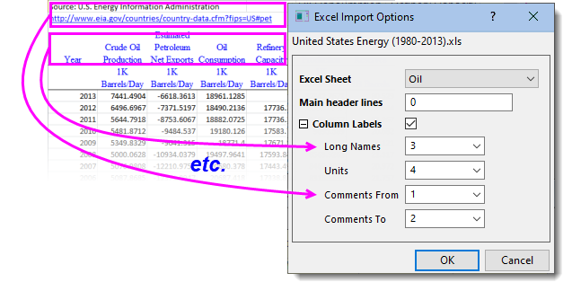
|
- Klicken Sie auf die Schaltfläche Neue Arbeitsmappe , um eine neue Arbeitsmappe zu erstellen. Wählen Sie dann Daten: Mit Datei verbinden: Excel.
- Navigieren Sie zum <Origin-Programmordner>\Samples\Import and Export\United States Energy (1980-2013).xls und öffnen Sie die Datei.
- Übernehmen Sie alle Standardeinstellungen im Dialog Excel-Importoptionen und klicken Sie auf OK.
- Halten Sie im Bedienfeld Datennavigator, das auf der linken Seite der Arbeitsmappe geöffnet wird, die Strg-Taste gedrückt und wählen Sie die anderen drei (abgeblendeten) Blätter. Klicken Sie mit der rechten Maustaste und wählen Sie Blatt/Blätter hinzufügen und verbinden. Die verbleibenden Blätter -- Natural Gas, Coal und Total Primary Energy -- werden in die Arbeitsmappe importiert. Beachten Sie: Wenn die unverbundenen Blätter groß sind, können Sie sie nach Bedarf nacheinander verbinden.
|
Aus Dateien importieren
ASCII-Daten Die Importroutinen, die unter Daten: Aus Datei importieren aufgeführt werden, sind älter als die Datenkonnektoren. Auch wenn die Routinen für Aus Datei importieren nicht mehr entwickelt werden, werden sie noch immer unterstützt.
Beachten Sie auch, dass womöglich keine Konnektoren für einige der Dateitypen, die in dieser Tabelle aufgelistet sind, existieren. Falls kein Datenkonnektor existiert, sollten Sie die Methoden unter Daten: Aus Datei importieren verwenden.
| Die Schaltfläche ASCII-Dateidaten  auf der Symbolleiste Standard ruft nun die Routine Daten: Mit Dateien verbinden: Text/CSV auf. Weiteres zur Routine impASC lesen Sie im nächsten Abschnitt. auf der Symbolleiste Standard ruft nun die Routine Daten: Mit Dateien verbinden: Text/CSV auf. Weiteres zur Routine impASC lesen Sie im nächsten Abschnitt.
|
ASCII-Dateien mit impASC importieren
- Die Methode Daten: Aus Datei importieren: Mehrere ASCII (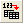) funktioniert im Allgemeinen gut beim Importieren von Textdateien, die eine einfache Struktur haben (funktioniert für den Import einzelner oder mehrerer Dateien). Diese Routine bearbeitet üblicherweise Dateien mit gängigen Trennzeichen und einer einfachen Headerstruktur ohne Anpassungen.
- Wenn der Dateiimport Anpassungen braucht, aktivieren Sie das Kontrollkästchen Optionendialog zeigen beim Auswählen Ihrer Datei(en) im Dialog ASCII. Der Dialog impASC wird vor dem eigentlichen Dateiimport aufgerufen und erlaubt Ihnen, Einstellungen für die Verarbeitung der Dateien festzulegen.
- 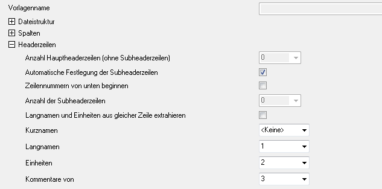
Importeinstellungen speichern
Wenn Sie die Importeinstellungen im Dialog impASC angepasst haben, können Sie sie mit einer von zwei Methoden speichern:
Das Speichern der Importeinstellungen mit der Arbeitsblattvorlage bietet Übertragbarkeit (z. B. können Vorlagen einfach mit Kollegen geteilt werden). Das Speichern von Importeinstellungen als ein Design bietet den Vorteil, dass eine beliebige Anzahl von kombinierten Importoptionen beim Importieren über den Dialog impASC aufgerufen werden können.
Einzelheiten zu Designs und Vorlagen finden Sie in dem Kapitel Origin benutzerdefiniert anpassen weiter hinten in diesem Dokument. Sie können außerdem weitere Informationen unter "Weiterführende Themen" nachlesen.
| Sie können Ihr eigenes Importdesign schnell aus der Liste unten im Menü Daten laden. Sie können auch das Menü Daten: Aus Datei importieren: Dateitypen hinzufügen/entfernen verwenden, um den Dialog Benutzerdefinierte Anpassung des Importmenüs zu öffnen. In diesem Dialog haben Sie die Möglichkeit, Anwenderdesigns zum Menü Daten: Aus Datei importieren hinzuzufügen. |
Drittanbieterformate
Wenn ein Datenkonnektor für ein bestimmtes Drittanbieterformat nicht existiert, können Sie noch Origins ältere auf X-Funktionen basierenden Importroutinen verwenden. Origin importiert viele gängige Fomate von Drittanbietern, einschließlich pClamp, NI TDM und NetCDF. Wie bei allen auf X-Funktionen basierenden Routinen können Sie die Importoptionen für Drittanbieterformate benutzerdefiniert anpassen und Ihre Einstellungen mit der Arbeitsblattvorlage oder als Dialogdesign für die spätere Verwendung speichern. Wie andere unterstützte Dateitypen auch können Sie Drittanbieterdateien mit Drag&Drop importieren. pClamp HDF5 SPC MATLAB JCAMP
| Dateityp |
Methode |
Weitere Informationen können Sie nachlesen unter Hilfe: Origin: Origin-Hilfe > Daten importieren und exportieren
|
|
Thermo (SPC, CGM)
pCLAMP (ABF, DAT, AB?)
Princeton Instruments (SPE)
Sound (WAV)
NetCDF (NC)
CDF (CDF)
HDF5 (H5, HE, HDF5)
NI DIAdem (DAT) National Instruments
Famos (DAT, RAW)
ETAS INCA MDF (DAT, MDF)
IgorPro (PXP, IBW)
Prism (PZFX, XML)
MATLAB (Mat)
Minitab (MTW, MPJ)
KaleidaGraph (QDA)
SigmaPlot (JNB)
MZXML(mzData, mzXML, mzML, imzML)
EarthProbe (EPA)
EDF (EDF, BDF, REC, HYP)
Somat SIE (SIE)
JCAMP-DX (DX, DX1, JDX, JCM)
HEKA (DAT)
SPSS (SAV)
BRUKER OPUS
SAS (sas7bdat)
Tektronix (ISF)
Data Translation (DCF, HPF)
Binary 2D Array (IMG, B2D)Binary 2D Array, Import
Image Image, Import
|
Daten: Aus Datei importieren: |
> Drittanbieterdateien importieren |
| Hinweis: Einige dieser Drittanbieterformate werden standardmäßig verborgen. Zum Hinzufügen wählen Sie Daten: Aus Datei importieren: Dateitypen hinzufügen/entfernen.... Der Dialog Benutzerdefinierte Anpassung des Importmenüs wird aufgerufen, in dem Sie wählen können, welche Dateitypen im Menü Aus Datei importieren gezeigt werden. Um ein Trennzeichen nach einem Menübefehl einzufügen, klicken Sie mit der rechten Maustaste auf das Bedienfeld rechts und wählen Sie Trennzeichen hinzufügen. Um ein Trennzeichen zu entfernen, klicken Sie im rechten Bedienfeld doppelt auf das Trennzeichen. |
Drag&Drop, Importieren mit
| Wenn kein Datenkonnektor für einen gegebenen Dateityp existiert (d. h. die in der Tabelle oben gelisteten Typen), wird die Drag&Drop-Unterstützung durch die Dateierweiterung geregelt und zwar über den Dialog Importfilter verwalten. Klicken Sie im Hauptmenü auf Einstellungen: Importfilter verwalten. |
| Hinweis: Weitere Informationen zum Arbeiten mit Drittanbieterdateien finden Sie in der Origin-Hilfe: Hilfe: Origin: Origin-Hilfe > Drittanbieterdateien importieren
|
Der Importassistent
Für den Import von komplexen ASCII-Dateien -- die Dateien, die nicht ausreichend gut mit den bereits erwähnten Methoden verarbeitet werden können -- können Sie den interaktiven Importassistenten verwenden. Dateien mit einem optionalen Headerabschnitt, gefolgt von einer sequenziellen Binärstruktur, können auch mit dem Importassistenten importiert werden: Binäre Daten Importassistent.
Ein weiterer Vorteil beim Verwenden des Importassistenten für Ihre ASCII-Daten ist, dass Sie Importfilter erstellen können, die auf eine Gruppe von Datendateien mit ähnlichen Namen abzielen. Dies ist insbesondere hilfreich, wenn diese Dateien Metadaten enthalten, die auf eine bestimmte Weise verarbeitet werden müssen. Der Filter kann dann für Drag&Drop-Importoperationen verwendet und zum Menü Daten: Aus Datei importieren hinzugefügt werden. Sie können diese Importfilter im Menü Einstellungen: Importfilter verwalten anzeigen und bearbeiten.
Um den Importassistenten auszuführen:
- Wählen Sie Daten: Aus Datei importieren: Importassistent oder klicken Sie auf die Schaltfläche
 , die sich auf der Symbolleiste Standard befindet.
, die sich auf der Symbolleiste Standard befindet.
- Entwickeln Sie Origin-Importfilterdateien (*.oif) für den Import von ASCII-Dateien, die nicht zufriedenstellend mit dem Text/CSV-Konnektor verarbeitet werden.
- Importieren Sie Daten von Webseiten mit Hilfe der Zwischenablage (siehe unten).
- Sie können Variablen aus dem Dateinamen und -header extrahieren.
- Legen Sie die benutzerdefinierten Trennzeichen und Datenformate fest, um Ihre Daten zu analysieren.
- Es besteht weiterhin die Möglichkeit, Ihre importierten Daten mit Hilfe eines benutzerdefinierten LabTalk-Skripts nachzubearbeiten.
| Hinweis: Weitere Informationen können Sie in der Hilfe nachlesen unter: Hilfe: Origin: Origin-Hilfe > Daten importieren und exportieren > Der Importassistent
|
Daten der Zwischenablage kopieren/einfügen
Daten der Zwischenablage, Importieren Ein einfacher Weg, um Daten in Origin einzulesen, ist das Kopieren von Daten in die Zwischenablage, von wo aus sie dann in Origin eingefügt werden können. Dies kann so unkompliziert vonstatten gehen, wie das Auswählen und Kopieren eines Datenblocks in einer Excel-Arbeitsmappe und dessen Einfügen in eine Origin-Arbeitsmappe. Daten in der Zwischenablage können jedoch möglicherweise nicht auf eine Weise formatiert, angeordnet oder getrennt sein, die es einfach macht, sie in Origin zu importieren. Im Folgenden finden Sie einige Informationen, die Sie dazu wissen sollten:
- Daten, die aus Excel kopiert und in Origin eingefügt werden, werden mit vollständiger Genauigkeit übertragen, unabhängig von der Anzahl der angezeigten Dezimalstellen in Excel.
- Wenn Sie mit Excel-Dateien arbeiten, die Headerinformationen enthalten, fügen Sie die Daten aus der Zwischenablage in Zeile 1 in Origin ein (nicht die Spaltenbeschriftungszeilen) und verwenden Sie dann die (Kontextmenü-)Befehle Als Langname setzen, Als Einheiten setzen, Als Kommentar setzen etc., um Ihre Metadaten zu definieren.
- Daten, die Sie aus dem Internet kopiert wurden, können auf verschiedene Weise formatiert werden. Sie müssen möglicherweise ein wenig experimentieren, um die Methode zu finden, die Ihre Daten am saubersten überträgt. Sollte ein einfacher Vorgang des Kopierens und Einfügens nicht ausreichen, versuchen Sie, den Importassistent zu verwenden. Der Importassistent beinhaltet eine interaktive Bedienoberfläche zum Parsen von Daten aus der Zwischenablage mit dem zusätzlichen Vorteil, dass Sie Ihre Vorgehensweise in einer Importfilterdatei (.oif) speichern können, um diese entsprechenden Einstellungen für identisch formatierte Daten zu einem späteren Zeitpunkt erneut verwenden zu können. Weitere Informationen können Sie im Tutorial Verwenden des Importassistenten zum Importieren von Daten aus der Zwischenablage nachlesen.
- 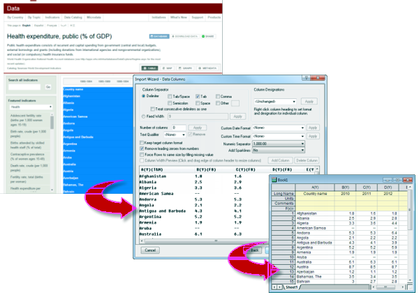
Daten selektiv durch Abfrage einer Origin-Datei importieren
Sie können selektiv Datenspalten aus einer externen Origin-Datei importieren, indem Sie vor dem Import eine SQL-ähnliche Abfrage im Datenkonnektor-Browser festlegen.
- 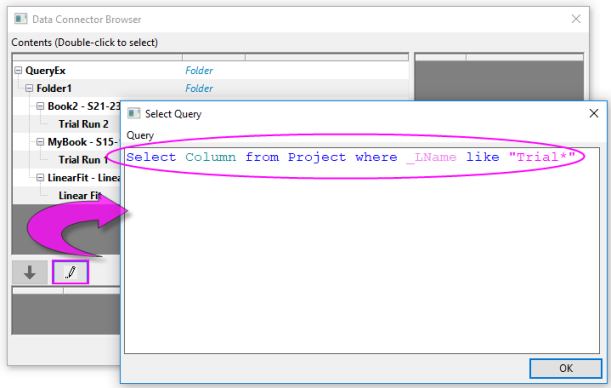
Um Origin-Dateien selektiv mit Hilfe des Origin Connector abzufragen:
- Wählen Sie bei aktivem Arbeitsblatt Daten: Mit Datei verbinden oder Mit Web verbinden.
- Navigieren Sie zu Ihrer Origin-Datei und klicken auf Öffnen. Der Datenkonnektor-Browser wird geöffnet.
- Klicken Sie auf die Schaltfläche Abfrage auswählen
 .
.
- Geben Sie Ihre Abfrage im Dialog Abfrage auswählen ein und klicken Sie dann auf OK.
Die Daten werden selektiv in die aktive Arbeitsmappe importiert, wie in Ihrer Abfrage angegeben.
Allgemeine Schlüsselwörter:
| Schlüsselwort |
Beschreibung |
| _SName |
Kurzname, z. B. _SName, Sheet_SName |
| _LName |
Langname, z. B. _LName, Book_LName |
| _Comments |
Kommentare, z. B. _Comments, Sheet_Comments |
| Column_D1 |
benutzerdefinierter Parameter der Spalte, wobei 1 der Parameterindex ist |
| Column_[Name] |
benutzerdefinierter Parameter der Spalte, wobei [Name] ein Parametername ist, der Leerzeichen enthält |
Beispiele:
Wähle die Spalten aus dem Projekt, bei denen _SName == "A"; wähle die Spalten aus dem Projekt, bei denen _Comments wie "S*3"; wähle die Spalten aus dem Projekt, bei denen (Column_P1 like "*y*" und Column_D1 > 3); wähle die Spalten aus dem Projekt, bei denen Sheet_SName wie "Trial*"; wähle die Spalten aus dem Projekt, bei denen (Book_SName wie "Book*" oder Book_LName wie"*fit*").
Weitere Informationen finden Sie unter Beispiele der Verwendung von SQL-Abfragebedingungen im Origin Connector.
Datenbank
SQL-Daten
Origin unterstützt das Verbinden von Datenbanken per ODBC und OLE DB. Außerdem enthält Origin einen einfachen SQL-Editor, um Verbindungszeichenketten hinzuzufügen und SQL-Abfragen innerhalb von Origin zu erzeugen.
Um SQL-Daten zu importieren, starten Sie mit dem Menübefehl Daten: Mit Datenbank verbinden:
- Mit Öffnen können Sie nach einer gespeicherten Verbindung (ODS) oder einer Abfragedatei (ODQ) suchen und diese öffnen.
- Neu öffnet den Dialog Datenbankkonnektor.
- 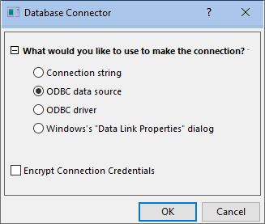
- Verbindungszeichenkette: Wählen Sie diese Option, wenn Sie bereits eine textbasierte Verbindungszeichenkette für eine gegebene Datenquelle haben (ODBC oder OLE DB).
- ODBC-Datenquelle: Wählen Sie diese Option, wenn Sie eine ODBC-Datenquelle über das Windows-Applet ODBC-Datenquellen-Administrator definiert haben.
- ODBC-Treiber: Wählen Sie diese Option, wenn Sie einen ODBC-Treiber haben und eine Datenquelle erstellen möchten, die auf diese Datenkonnektorinstanz anwendbar ist.
- Windows-Dialog Datenverknüpfungseigenschaften: Wählen Sie diese Option, wenn Sie eine OLE-DB-basierte Datenquelle wie SQL-Server oder Access-Client-Library verwenden.
Weiteres, das zu beachten wäre:
- Verwenden Sie die Systemvariable @IPDB, um den Schutz des importierten Bereichs (0 = kein Schutz, 1 = geschützt, aber Neuordnen zulässig, 2 = geschützt) zu steuern.
- Ähnlich wie bei anderen Konnektoren haben Sie die Option beim Speichern als OPJU/OGWU Importierte (Daten) auszuschließen .
- 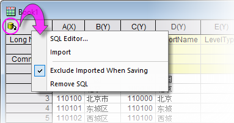
Digitalisierer
Punktdiagramme digitalisieren Manchmal verfügen Sie vielleicht nur über eine grafische Darstellung einiger Daten, die Sie gern weiter untersuchen würden. Verwenden Sie den Digitalisierer, um eine Bilddatei zu importieren. Digitalisieren Sie die Zeichnungen und konvertieren Sie Ihr Bild in numerische Daten, die Sie mit Hilfe von Origins Hilfsmitteln zur Analyse und grafischen Darstellung untersuchen und neu zeichnen können.
- 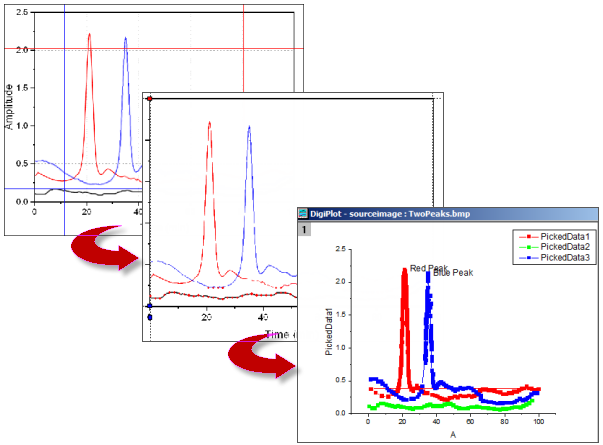
- Importieren Sie die gängigsten Bildformate.
- Drehen Sie das importierte Bild, entfernen Sie Rauschen und kalibrieren Sie die Skalen durch Auswahl von Anfangs- und Endwerte.
- Wählen Sie Punkte auf Kurven manuell oder automatisch aus.
- Fügen Sie ggf. manuell Kurvenwendepunkte hinzu.
- Entfernen Sie interaktiv Punkte, die Sie nicht digitalisiert haben möchten.
- Kartesische, polare und ternäre Koordinatensysteme werden unterstützt.
Um den Digitalisierer zu öffnen:
- Klicken Sie auf die Schaltfläche Bild digitalisieren
 auf der Symbolleiste Standard oder wählen Sie im Hauptmenü Hilfsmittel: Digitalisierer.
auf der Symbolleiste Standard oder wählen Sie im Hauptmenü Hilfsmittel: Digitalisierer.
Origin-Dateien ohne importierten Daten speichern
Anwender haben seit Langem die Option, Origin-Dateien ohne Daten zu speichern. Vorlage speichern unter..., Arbeitsmappe als Analysevorlage speichern und Projekt ohne Daten speichern waren drei Optionen zum Speichern von Origin-Dateien ohne Daten, während die Einstellungen und Operationen mit der Datei bewahrt werden.
Anwender haben jetzt die Option, Origin-Dateien ohne die importierten Daten zu speichern. Diese Option ist besonders attraktiv für Anwender, die mit großen Datendateien arbeiten, wobei das Speichern von diesen Daten mit der Datei die Leistung beeinträchtigen oder Festplattenplatz verschwenden würde.
- Standardmäßig werden Daten, die mit einem Datenkonnektor importiert werden, nicht mit der Mappe gespeichert, wenn die Importdateigröße 500 kB überschreitet. Jede Mappe hat ihr eigenes Häkchen Importierte Daten beim Speichern ausschließen, und das Entfernen des Häkchens auf einer beliebigen Seite in der Mappe zieht nach sich, dass alle importierten Daten mit der Mappe gespeichert werden.
- 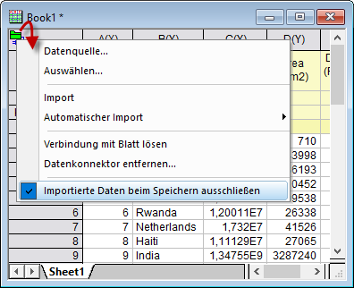
- Jede Mappe im Projekt -- nicht nur die Mappen mit Datenkonnektoren -- können so konfiguriert werden, dass importierte Daten ausgeschlossen werden, indem mit der rechten Maustaste auf die Fenstertitelleiste geklickt, Eigenschaften ausgewählt und dann unten im Dialog Importierte Daten beim Speichern des Projekts ausschließen aktiviert wird.
- 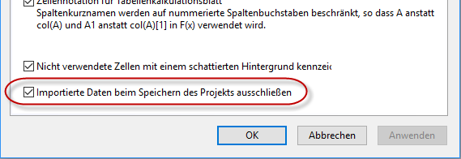
Der Vorgang des Ausschließens der Daten beim Speichern unterscheidet sich vom Speichern einer Vorlagendatei in ein paar wichtigen Punkten:
- Wenn Sie importierte Daten ausschließen, speichern Sie noch immer alle Ausgaben, die sich aus den Analyseoperationen der importierten Daten ergeben -- Anpassungsergebnisse, statistische Analysen, Berechnungen mittels Werte setzen etc. -- Sie speichern nur die importierten Daten oder Diagramme dieser importierten Daten nicht.
- Mappen, die Sie ohne importierte Daten gespeichert haben, behalten eine "Live"-Verbindung zur ursprünglichen Datenquelle. Klicken Sie im Fall von Mappen, die Datenkonnektoren enthalten auf das Symbol Datenkonnektor und dann auf Importieren (aktives Blatt) oder Alle importieren (alle Blätter in Mappe). Aktivieren Sie bei Mappen, die für den Standarddateiimport verwendet werden, erst die leere Mappe und klicken Sie dann auf Daten: Direkt neu importieren oder klicken Sie auf die Schaltfläche Neuimport ohne Dialog auf der Symbolleiste Import (siehe nächsten Abschnitt).
Datendateien erneut importieren
Neu importieren Es gibt zwei Importbefehle im Menü Daten, die speziell für den wiederholten Import der gleichen Datei ausgelegt sind (d. h., der Dateipfad und -name müssen gleich sein):
- Direkt neu importieren Wenn Sie eine Datei in ein Origin-Arbeitsblatt oder -Matrixblatt importieren, wird standardmäßig eine Anzahl von Parametern, einschließlich Dateipfad und Name, in dem Blatt gespeichert. Wenn Sie eine externe Datendatei haben, die regelmäßig aktualisiert wird, oder wenn Sie eine Standarddatei erneut in das Arbeitsblatt laden möchten, können Sie direkt erneut importieren, ohne einen Importdialog zu öffnen.
- Neu importieren Dieser Menübefehl öffnet den Importdialog der entsprechenden X-Funktion für den Dateityp, so dass Sie Ihre Importoptionen vor dem Neuimport anpassen können.
|
Hinweise:
- Es kann nur eine Datei zur gleichen Zeit erneut importiert werden. Wenn Sie eine dieser beiden Menübefehle verwenden, wird nur die mit dem aktiven Arbeitsblatt oder Matrixblatt verbundene Datei importiert. Wenn die ausgewählten Daten aus mehrere Dateien importiert werden, schlägt der Vorgang des erneuten Importierens fehl.
- Wenn Sie eine ASCII-Datei mit dem Importassistenten importiert haben und im Menü Datei: Neu importieren wählen, wird anstatt des Importassistenten der Dialog impASC geöffnet.
- Der erneute Import funktioniert nicht für binäre oder benutzerdefinierte Datentypen, die mit dem Importassistent importiert worden sind.
|
Import klonen
Das Klonen eines Imports funktioniert, indem ein Import "modelliert" wird -- und optional eine verbundene Analyseoperation -- und dann das, was mit der ursprünglichen Datei gemacht wurde, auf eine Reihe von ähnlichen Dateien angewendet wird. Solange die aktive Mappe die importierten Daten und verbundenen Operationen enthält, kann sie geklont werden. So gesehen ähnelt das Klonen dem Erstellen einer Analysevorlage, ist aber etwas eingeschränkter hinsichtlich seines Einflusses (z. B. kann es nicht mit dem Hilfsmittel Stapelverarbeitung zusammen verwendet werden).
Das Klonen des Imports wird von beiden Methoden, Datenkonnektor und X-Funktion, unterstützt. Ein kurzes Tutorial zeigt Ihnen die Grundlagen des Klonens von Import und Analyseoperationen.
|
- Klicken Sie auf die Schaltfläche Neue Arbeitsmappe , um eine neue Arbeitsmappe zu erstellen.
- Navigieren Sie im Dateiexplorer von Window zu Ihrem Ordner <Origin-Programm>\Samples\Curve Fitting und suchen Sie nach der Datei Sensor01.dat. Ziehen Sie die Datei per Drag&Drop in die neue Arbeitsmappe. Die .dat-Datei wird mit Hilfe des Text/CSV-Konnektors importiert.
- Klicken Sie auf den Header von Spalte B, um die Spalte zu markieren, und klicken Sie dann auf die Schaltfläche Punktdiagramm
 , um ein Punktdiagramm zu erstellen. , um ein Punktdiagramm zu erstellen.
- Klicken Sie auf die Skalierung der X- oder Y-Diagrammachse und im dann angezeigten Dialog Achsen auf die Registerkarte Skalierung. Drücken Sie dann die Strg-Taste und markieren Sie die Achsensymbole Horizontal und Vertikal im linken Bedienfeld. Setzen Sie Neu skalieren auf Auto und klicken Sie auf OK.
- Klicken Sie bei aktiver Grafik auf Analyse: Anpassen: Lineare Anpassung und öffnen Sie den Dialog. Setzen Sie Neu berechnen auf Auto, übernehmen Sie die anderen Standardeinstellungen und klicken Sie auf OK. Antworten Sie mit Nein auf die Erinnerung und klicken Sie auf OK.
- Klicken Sie mit der rechten Maustaste auf Ihre Arbeitsmappenreiter und klicken Sie auf Diagramm als Blatt hinzufügen. Auf diese Weise wird Ihr Punktdiagramm mit den Ergebnissen der linearen Anpassung als eine Seite in Ihre Arbeitsmappe eingefügt.
- 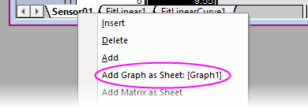
- Stellen Sie sicher, dass das Blatt mit den importierten Daten aus Sensor01.dat aktiv ist, und klicken Sie auf die Schaltfläche Import klonen
 auf der Symbolleiste Import. auf der Symbolleiste Import.
- Navigieren Sie noch einmal zu Ihrem Ordner <Origin-Programm>\Samples\Curve Fitting, drücken Sie die Strg- oder Shift-Taste und wählen Sie die Dateien Sensor02.dat - Sensor07.dat. Klicken Sie auf Hinzufügen und dann auf OK. Was Sie sehen sollten, ist die Verwendung der ursprünglichen Mappe als ein Modell für die Import- und Analyseoperationen. Die Sensor-Dateien werden mit Hilfe des Text/CSV-Konnektors importiert und nacheinander verarbeitet (es kann ein paar Sekunden dauern, bis alle Operationen abgeschlossen sind).
- 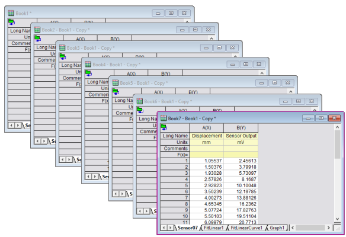
|
Weiterführende Themen